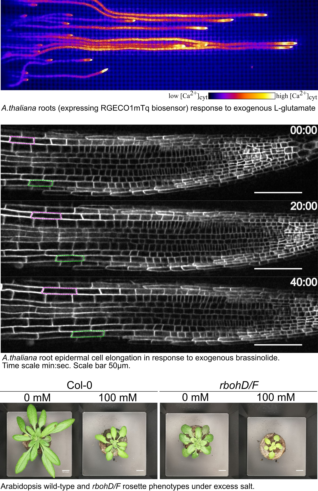

Plant biologist studying cell signaling, stress physiology, and quantitative approaches to complex biological systems.
My research combines experimental and computational approaches to understand how plants perceive, integrate, and respond to environmental signals. I am also a co-founder of an agri-biotech venture and co-inventor of a national patent for seed-priming technology.
